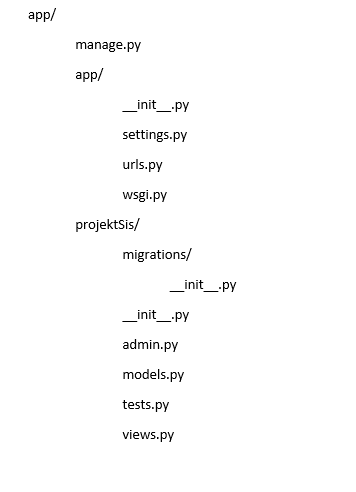

Sigurnost Django frameworka
Članovi:
Igor Čoklo
--Igor Čoklo 20:41, 9. studenog 2015. (CET)
Sadržaj |
Uvod
Django je jedan od mnogih web programskih okvira za Python programski jezik. Django je besplatan i open source programski okvir koji olakšava izradu web aplikaciju i on se brine oko raznih gnjavaža vezanih uz web razvoj tako da se programer može fokusirati samo na izradu aplikacije, a Django će se pobrinuti za ostale low level detalje kao što su protokoli, soketi ili upravljanje procesima/dretvama. Django podržava mnoge baze podataka kao što su PostgreSQL, MySQL, Sqlite, Oracle, IBM DB2, Microsoft SQL Server, Firebird i mnoge druge. Django dolazi s bazom SQLite koja je ujedno i najjednostavnija za rad i oni koji se baš ne razumiju u baze i samo žele isprobati Django se nebi trebali zamarati drugim bazama jer im je ova sasvim dovoljna za testiranje Djanga. Django je web programski okvir koji slijedi Model-View-Controller (MVC) dizajn koji se kod njega zove Model-View-Templates i označava sljedeće: model je zapravo entitet o kojem aplikacija prikuplja podatke, pogled (eng. view) je funkcija koja dohvaća te podatke iz baze i prikazuje ih na
predlošku (eng. template).
[1]
Hello World program
S obzirom da se Django okvir koristi za razvoj velikih web aplikacija, kad se stvori Django aplikacija tada nam se automatski kreiraju i određeni direktoriji:

{kind=link}
- početna mapa se zove app i to je mapa u koju će se spremati sve datoteke i mape aplikacije
- nakon toga slijedi manage.py, to je alat naredbenog retka (komandne linije) koji omogućuje interakciju s Django projektom na razne načine
- unutrašnja mapa app je stvarni Python paket za moj projekt.
- app/__init__.py je prazna datoteka koja govori Pythonu da se ova mapa treba smatrati Python paketom
- app/settings.py - postavke trenutnog Django projekta
- app/urls.py - tu je zapravo popis svih url-a koji će se koristiti u Django aplikaciji.
- app/wsgi.py - polazna točka ako želimo postaviti svoju aplikaciju na neki web server kako bi ju ostali korisnici interneta mogli koristiti
Unutar mape projektSis se zapravo nalazi moja aplikacija u kojoj ću pisati svoj kod, sad se možda zapravo pitate ćemu to kad se to sve moglo napraviti i u mapi app, to je zapravo zato jer je Django namijenjen izradi velikih
projekata koji će se sastojati od više aplikacija. Ovdje ću reći razliku između projekta i aplikacije, naime aplikacija je web aplikacija koja radi određenu akciju, a projekt se sastoji od više aplikacija. Ostale stavke neću pojašnjavati zato jer zasad to nije potrebno.
Da bi se moglo kreirati jednostavnu Hello World aplikaciju potrebno je napraviti sljedeće stvari:
- trebamo reci serveru da kad se u adresnoj traci preglednika pojavi rijec pocetna da nas on preusmjeri na pogled 'projektSis.views.pocetna', a to ćemo napraviti sljedećom linijom koda u datoteci urls.py:
url(r'pocetna/', 'projektSis.views.pocetna',name='pocetna'),
- nakon toga trebamo definirati svoj pogled u datoteci views.py:
def pocetna(request): return HttpResponse("Hello World!") - pokrenuti aplikaciju
Nakon što to napravimo uspjeli smo napraviti Django Hello World program koji se prema zadanim postavkama može vidjeti na adresi http://localhost:8000/pocetna/.
[1]
Injection
SQL injection je vrsta napada u kojem zlonamjerni korisnik može izvršavati proizvoljni SQL kod nad bazom podataka, ovo bi značilo da ako u aplikaciji postoji ranjivost na SQL injection tada zlonamjerni korisnik može raditi neke nedopuštene stvari nad bazom podataka: može saznati podatke o korisnicima aplikacije, može brisati te podatke, može ih objaviti negdje tako da su svima dostupni, itd.
Korištenjem Django querysets, rezultirajući SQL će biti siguran od napada kao što je SQL injection, ali Django također pruža programerima pisanje neobrađenih (eng. raw) upita. Kod korištenja takvih neobrađenih upita treba biti jako oprezan i izbjegavati korištenje parametara koje korisnik može kontrolirati jer ako programeri nisu oprezni mogli bi korištenjem neobrađenih upita napraviti aplikaciju koja je ranjiva na SQL injection.
Pošto Django koristi ORM (eng. Object-relational mapping) što je programska tehnika koja omogućuje programerima da koriste podatke iz baze kao objekte, tj. da im pristupaju kao objektima. Django Queryset predstavlja kolekciju objekata iz baze podataka koji se mogu filtrirati po raznim filterima. U SQL terminima QuerySet odgovara SELECT naredbi, a filtar je zapravo naredba WHERE ili LIMIT.
Primjer Django Queryset-a:
Ako u našoj bazi podataka postoji tablica korisnika(kod Djanga se korisnici dohvaćaju preko klase User) onda je veoma lagano dohvatiti sve korisnike iz baze podataka preko jednostavnog Queryset-a (bez da se koristi ikakav SQL upit):
korisnici=User.objects.all()
Isto tako se može veoma jednostavno dohvatiti bilo kojeg korisnika po njegovom IDu:
korisnik=User.objects.get(id=korisnikovID)
Django ima jako puno mogućnosti za dohvaćanje i filtriranje podataka iz baze. Ako programer želi napraviti aplikaciju koja je zaštićena od SQL injectiona tada treba koristiti već spremljene funkcije kod Djanga kojih zbilja ima mnogo, kao na primjer kod autentifikacije korisnika:
def prijava(request):
rijecnik={}
rijecnik.update(csrf(request))
return render(request,'prijava.html',rijecnik)
def provjera_korisnika(request):
korisnicko_ime=request.POST['kime']
lozinka=request.POST['lozinka']
korisnik=auth.authenticate(username=korisnicko_ime,password=lozinka)
if korisnik is not None:
auth.login(request, korisnik)
return HttpResponse('Uspjesno ste se prijavili u aplikaciju')
else:
return HttpResponse('Neuspjesna prijava, provjerite jeste li unijeli dobre podatke!')
Kod pogleda prijava se samo prikazuje predložak prijava koji služi za prijavu u aplikaciju, a pogled provjera_korisnika koristi funkciju auth.authenticate za autentifikaciju korisnika, ako ova funkcija vrati None znači da korisnik ne postoji u bazi ili da su uneseni krivi podaci i tada će ovaj pogled ispisati u pregledniku tekst 'Neuspjesna prijava, provjerite jeste li unijeli dobre podatke!', a ako ne vrati None znači da korisnik postoji u bazi i sa funkcijom auth.login se korisnik prijavljuje u aplikaciju i ispisuje se tekst 'Uspjesno ste se prijavili u aplikaciju' .
Korištenjem neobrađenih upita riskira se da aplikacija bude ranjiva na SQL injection, ali ipak možda je u nekim situacijama potrebno koristiti taj način. Primjer korištenja neobrađenih upita nad tablicom korisnika:
korisnici=User.objects.raw('SELECT * FROM auth_user')
for k in korisnici:
print(k)
Ovo je primjer jednostavnog upita koji će nam vratiti sve korisnike iz tablice auth_user (tablica koju nam Django stvara i u nju se spremaju svi korisnici)
[2],[3],[4]
Broken Authentication and Session Management
Broken Authentication and Session Management iliti problemi sa autentifikacijom i upravljanje sesijama je problem koji je povezan s krađom korisničkih podataka kao što su username ili password prilikom logina na neku stranicu.
Načini na koje web aplikacija može zakazati pri zaštiti korisničkog imena, lozinke i sessionIDa:
- nekriptirana konekcija (bez https) – svatko može vidjeti podatke koji se šalju preko nekriptirane veze, rješenje je omogućavanje enkripcije na zahtjevima koji sadrže osjetljive podatke
- predvidljivi podaci za prijavu u web aplikaciju: primjer korisničkog imena: 123456, qwerty, lozinka: 12345678, abc123 (jako loše kombinacije) , rješenje je tjeranje korisnika da koriste bolje lozinke pomoću regularnih izraza
- nema isteka sesije/sesija nije poništena kod logouta (problem je krađa sesije), rješenje je postavljanje isteka sesije nakon određenog vremena neaktivnosti i poništavanje sesije kod logouta
- sesion id se koristi u url-u, problem je krađa sesije, ako se nekom pošalje link sa id-om sesije u sebi tada se neki drugi korisnik može koristiti aplikacijom kao da je prijavljen kao neki drugi korisnik (ja se prijavim u app, pošaljem link kolegi koji u sebi ima sesion id i on koristi app i prijavljen je kao ja u toj aplikaciji), rješenje je: ne slati sesion id u url-u, nego ga slati u tijelu POST zahtjeva, to bi trebalo vrijediti za sve, ne slati osjetljive podatke u url-u nego u tijelu POST zahtjeva.
Kod Djanga može nastati sljedeći problem: Na primjer napadač se može prijaviti na stranicu good.example.com i dobiti valjanu sesiju za svoj račun. Ako napadač ima kontrolu nad stranicom bad.example.com, on može iskoristiti tu stranicu kako bi poslao svoj ključ sesije nekom običnom korisniku zato jer poddomena dopušta postavljanje kolačića na sve stranice *.example.com. Dok obični korisnik posjeti stranicu good.example.com on će biti prijavljen kao napadač i mogao bi nehotice unijeti svoje osjetljive podatke (broj kreditne kartice) u napadačev račun.
Drugi napad koji bi se mogao desiti kod Djanga je ako bi stranica good.example.com postavila varijablu SESSION_COOKIE_DOMAIN (domena za spremanje sesijskih kolačića) na ".example.com" što bi prouzročilo da se sesijski kolačići od stranice good.example.com šalju stranici bad.example.com.
[5],[6]
Cross-Site Scripting (XSS)
Cross-Site Scripting je tehnika napada kod koje napadač može ubaciti (injectati) nesigurne isječke javascript koda u našu aplikaciju bez validacije. Taj Javascript kod će se onda izvršiti kad neka žrtva posjeti zaraženu aplikaciju/stranicu. Postoji više vrsta XSS napada:
- Reflected XSS – napadač žrtvi šalje link do zaražene stranice/aplikacije pomoću email-a, društvenih mreža, itd. Taj link sadrži skriptu koja je ugrađena u stranicu/app i ta skripta se izvršava kad žrtva posjeti tu stranicu
- Stored XSS – napadač može trajno postaviti skriptu na određenu web stranicu koja će se izvršiti kad bilo tko posjeti tu stranicu
Rizici koji se mogu desiti prilikom XSS napada:
- Kompromitiranje (razotkrivanje) podataka nekog korisnika web aplikacije ili preuzimanje korisničkog računa nekog korisnika
- Razotkrivanje podataka određene web aplikacije (podaci korisnika: lozinke, username, itd.)
- Modifikacija sadržaja na određenoj stranici
- Redirekcija žrtava na neke druge maliciozne stranice
- Web stranica postaje platforma za instalaciju svakakvih malware-a na žrtvina računala
Zaštita od XSS napada:
- Korištenjem frameworka
- Postaviti sve cookije da koriste samo HttpOnly atribut – to će zaštiti cookie da ne bude dostupan malicioznim skriptama na klijentskoj strani
- Validacija korisničkog unosa (sav vanjski unos se treba smatrati malicioznim)
Naputci vezani uz Django: korištenje Django predložaka nas štiti od većine XSS napada. Django predlošci ispuštaju (eng. escape) posebne znakove koji su posebno opasni kod HTML-a. Iako ovaj način štiti korisnike od većine malicioznih unosa, taj način nije potpuno siguran. Na primjer, ovaj način nas neće zaštiti od sljedećeg:
<style class={{ var }}>...</style>
Ako je varijabla var postavljena na sljedeću vrijednost 'class1 onmouseover=javascript:func()' to može rezultirati neovlaštenim izvršavanjem Javascript-a, ovisno o tome kako preglednik prikazuje nesavršen HTML. (citiranjem vrijednosti atributa class bi se riješio ovaj problem)
Također programeri Django aplikacija trebaju biti veoma oprezni kod spremanja HTML-a u bazu, osobito kad se taj HTML treba dohvatiti i prikazati.
[2] i [5]
Cross Site Request Forgery (CSRF)
Ovo je tip ranjivosti koji omogućuje napadačima da natjeraju obične korisnike da izvode neke aktivnosti nesvjesno, kod csrf-a korisnici su obično nesvjesni da se maliciozne akcije izvode u pozadini. Na primjer: korisnik Igor se logira u aplikaciju svoje banke i on želi poslati Hrvoju 200kn za instrukcije iz programiranja, a u isto vrijeme dok je logiran na stranicu svoje banke ujedno je i na nekoj drugoj stranici koju kontrolira Ivan (zločesti haker) i sad Igor klikne da uplati novac s svojeg računa na Hrvojev, a Ivan u isto vrijeme presretne taj POST zahtjev i napravi sljedeću modifikaciju u formi i pošalje sebi novac:
<form action="http://bank.com/transfer.do" method="POST"> <input type="hidden" name="account" value="Ivan"/> <input type="hidden" name="amount" value="10000"/> <input type="submit" value="Izvrši uplatu"/> </form>
Nakon toga na Ivanov račun dođe 10000 kuna, a Igor ostane bez svojih novaca bez da to prvotno nije znao, ali kad Igor pogleda sva svoja plačanja vidit će da je poslao novac Ivanu, a da Hrvoju nije poslao ni lipe.
Django i CSRF: Django ima ugrađenu zaštitu protiv većine vrsta csrf napada, pod uvjetom da su programeri omogućili tu zaštitu i koristili je tamo gdje je potrebno. Međutim ovdje se može desiti problem tako da na primjer programeri isključe csrf modul globalno ili ga samo isključe na određenim pogledima ==> programeri bi to trebali raditi samo ako razumiju što rade.
CSRF zaštita radi tako da se provjeri postoji li nonce (number used only once) u svakom POST zahtjevu. Time je osigurano da zlonamjerni korisnik ne može ponoviti POST zahtjev na određenu stranicu kako bi na primjer prenio novac na svoj račun, da bi to napravio zlonamjerni korisnik bi trebao znati nonce, koji je specifičan za svakog korisnika.
Programeri trebaju biti veoma oprezni kada obilježavaju poglede sa csrf_exempt anotacijom (ona isključuje csrf modul) i tu anotaciju ne treba koristiti osim ako je apsolutno neophodno.
[2], [5]
Zaštita podataka korištenjem HTTPS protokola
Uvijek je bolje za sigurnost implementirati web aplikaciju korištenjem HTTPS protokola. Bez ovog protokola, zlonamjerni korisnici mogu vidjeti sve podatke koji se šalju između klijentskog računala i servera te mogu te podatke iskoristiti kako bi se prijavili kao neki drugi korisnik i napravili neku štetu ili mogu čak mijenjati te podatke. Kad se koristi HTTPS protokol veza je kriptirana i zlonamjerni korisnik tada ne može raditi štetu korisnicima.
Ako Django programeri žele koristiti zaštitu koju HTTPS pruža u svojim web aplikacijama i ako server podržava HTTPS postoje neki dodatni koraci koji bi im mogli zatrebati:
- postavite varijablu SECURE_SSL_REDIRECT u postavkama projekta na True kako bi svi zahtjevi koji koriste HTTP bili preusmjereni na HTTPS.
- korištenje sigurnih kolačića - ako se preglednik na početku povezuje preko HTTP protokola što je zadana vrijednost za većinu preglednika moguće je vidjeti informacije koje postoje u već postojećim kolačićima, baš zbog toga je potrebno postaviti varijable SESSION_COOKIE_SECURE i CSRF_COOKIE_SECURE u postavkama projekta na True. Ove dvije postavke govore pregledniku da šalje već postojeće kolačiće samo preko HTTPS veze. Ovdje treba imati na umu da ako se te dvije varijable postave na True to označava da sesija neće raditi preko HTTP-a i da će CSRF zaštita spriječiti primanje POST podataka preko HTTP-a (sve će biti u najboljem redu ako se cijeli HTTP promet preusmjerava na HTTPS)
- koristite HTTP Strict Transport Security (HSTS) - HSTS je tip HTTP zaglavlja koji obavještava preglednik da sve buduće veze prema određenoj stranici trebaju uvijek koristiti HTTPS. U kombinaciji s preusmjeravanjem zahtjeva sa HTTP-a na HTTPS, ova mogućnost će osigurati da sve veze koriste HTTPS. HSTS se može podesiti pomoću varijabli SECURE_HSTS_SECONDS i SECURE_HSTS_INCLUDE_SUBDOMAINS ili na web poslužitelju.
[2]
Literatura
- Igor Čoklo (2015), Razvoj web aplikacija u Python-u, dostupno 10.01.2016 na http://services.foi.hr/thesis/web/tema/2437/file
- Security in Django, https://docs.djangoproject.com/en/1.9/topics/security/
- Making queries, https://docs.djangoproject.com/en/1.9/topics/db/queries/
- Performing raw SQL queries, https://docs.djangoproject.com/en/1.9/topics/db/sql/
- Owasp top 10, https://www.youtube.com/watch?v=02mLrFVzIYU&list=PLoyY7ZjHtUUVLs2fy-ctzZDSPpawuQ28d
- Session Security, https://docs.djangoproject.com/en/1.9/topics/http/sessions/#topics-session-security